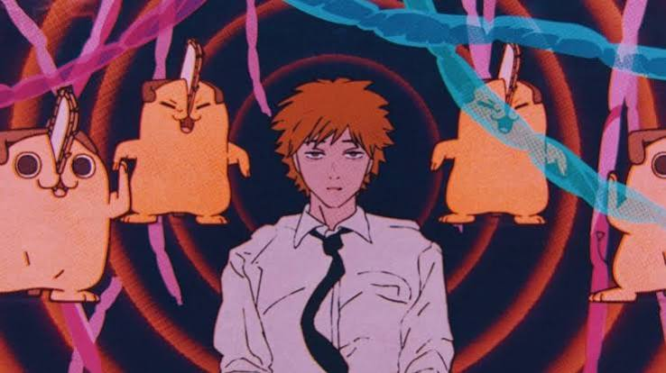
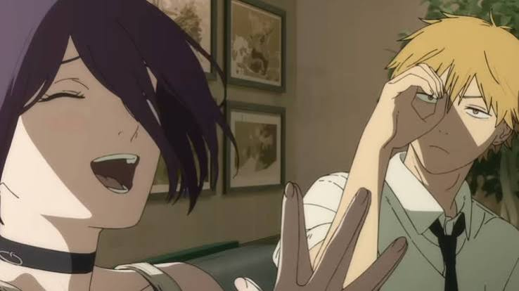

Anime possesses an unparalleled ability to craft auditory soundscapes that are just as dynamic and imaginative as its visuals, and Chainsaw Man the Movie: Reze Arc stands as a masterclass in kinetic sound design. Because animation starts with complete silence, every single footstep, gust of wind, and engine rev must be built from the ground up, allowing audio engineers to create highly stylized and impactful effects. In this arc, the clash between roaring chainsaws and earth-shattering explosions requires meticulous foley work to make the fantastical action feel incredibly grounded and heavy. The sound design team expertly layers industrial noises, sputtering motors, and concussive blasts to give the action a visceral, thumping weight. This level of intentional, aggressive sound engineering ensures that every high-octane encounter hits the viewer with maximum impact, proving that anime’s auditory thrills can easily rival the biggest Hollywood blockbusters.

Beyond explosive action, the medium utilizes its musical scores to drive the narrative forward and elevate the emotional stakes of the story. For the Reze Arc, renowned composer Kensuke Ushio deliberately expanded his musical palette, incorporating a massive, sweeping full orchestra to capture the unique blend of cinematic romance and tragedy that defines this specific storyline. Anime composers are given immense creative freedom to experiment, and Ushio’s brilliant soundtrack seamlessly blends these grand orchestral swells with his signature driving electronic beats and atmospheric synth textures. This dynamic musical range perfectly mirrors the chaotic yet deeply emotional journey of the characters, transitioning effortlessly from a quiet, tender piano melody during a peaceful nighttime scene to an intense, frantic techno-orchestral hybrid during a major battle. It is this profound musical storytelling that allows anime to communicate complex feelings entirely through sound.

Furthermore, the sheer dedication and talent of Japanese voice actors, known as seiyuu, play a massive role in cementing anime as the superior form of media. Voice acting in anime is an incredibly respected and highly competitive art form, requiring performers to pour intense, raw emotion into the microphone. In the Reze Arc, the vocal performances must navigate a very tricky balancing act, constantly shifting between lighthearted, conversational banter and desperate, heartbreaking vulnerability. The actors excel at portraying this duality, using subtle inflections—a slight quiver in a voice, a sharp intake of breath, or a roaring shout of determination—to give their animated counterparts a deeply human soul. Without the benefit of physical micro-expressions on a live-action actor's face, the seiyuu carry the immense weight of the drama purely through their vocal cords, resulting in performances that are breathtakingly authentic.
Finally, what truly sets anime apart is the immaculate synergy of its audio mixing, where sound effects, music, and voice acting are perfectly woven together to create an all-encompassing theatrical experience. The audio direction in Chainsaw Man the Movie: Reze Arc brilliantly understands the power of contrast, knowing exactly when to blast the viewer with a wall of intense sound and when to employ absolute, deafening silence to build nerve-wracking suspense. This masterful pacing ensures that the explosive climaxes feel earned and the quiet, emotional resolutions hit with devastating clarity. Combined with high-energy theme songs performed by chart-topping musical artists that perfectly set the tone for the film, the entire audio experience becomes an unforgettable, immersive event. It demonstrates how anime treats sound not just as a background element, but as a crucial, driving force of the artistic vision.